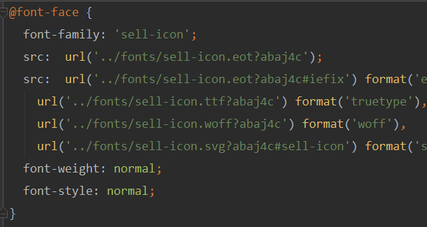

Part.前期工作：
局域网内手机预览vue项目
将config->index.js 中的host：‘localhost’换成host：‘你的本机ip’
stylus的使用
ES6语法
Part.通用文件
cssreset
Eric Meyer's Reset CSS v2.0 (http://meyerweb.com/eric/tools/css/reset/)
在html入口文件中引入reset.css
iconMoon
IconMoon App -> Import Icons -> Generate Font -> Download
将下载的字体文件放入common对应的文件中，引入时
@import "../../common/stylus/icon.css";
备注：该文件若以styl后缀，则报错，改成css，并且修改fonts引入路径。

mixin.styl
该文件写一些通用的css函数
例如：border-1px bg-image
Part.css
1像素border的实现
由于高清屏的特性，1px是由2×2个像素点来渲染，border:1px在Retina屏下会渲染成2px的边框
使用 mixin 定义一个通用函数
mixin.styl

对 伪类 :after 进行缩放，以适应不同 dpr 的手机。通过 @media (媒体查询)，来确定 设备的 dpr。 为了方便调用，定义一个全局的 class
base.styl

用例：border-1px(rgba(7, 17, 27, 0.1))
背景图@2x和@3x显示
因为手机的dpr(设备像素比不同)，我们需要根据dpr来修改图标的大小
通过mixin,动态修改图标的背景图片。通过@media (媒体查询)，判断设备的dpr

用例：bg-image('special_1')
毛玻璃效果
注：需要通过具体的image元素才实现，如果单单作用于一个空元素背景，则没效果。
filter: blur(10px)
高斯模糊效果
只支持ios端；只作用于当前元素；
适用场景：为背景添加模糊效果；如果目标元素内包裹着其他内容 则应用filter属性；
backdrop-filter: blur(10px)
消除image和文字的间距
font-size:0
CSS Sticky footers布局
如果页面内容不够长，页脚块粘贴在视窗底部；如果内容足够长，页脚块会被内容向下推送。
注：不同写法有兼容性问题，该方法兼容性最好
html布局套路

css样式（注：clearFix为通用样式，写在base.styl中。）


使用padding来实现Image图片高度按比例自适应

vertical-align:top的理解
使图标和文字垂直对齐
display:table
动画过度特效

Part.Vue
better-scroll插件
ref
ref 被用来给元素或子组件注册引用信息。引用信息将会注册在父组件的 $refs 对象上。
用例：<div class="menu-wrapper" ref="menuWrapper">
vm.$refs
用例：his.$refs.foodWrapper
vm.nextTick
将回调延迟到下次 DOM 更新循环之后执行。在修改数据之后立即使用它，然后等待 DOM 更新。
computed计算属性
计算属性的结果会被缓存，除非依赖的响应式属性变化才会重新计算。注意，如果某个依赖 (比如非响应式属性) 在该实例范畴之外，则计算属性是不会被更新的。
vue对象语法
<div v-bind:class="{ active: isActive }"></div>
获取滚动的实时位置Y坐标（scroll距离顶部的位置，为负）

阻止冒泡事件
@click.stop.prevent="addCart($event)"
父子组件事件监听
vue2.0废除了$dispatch
子组件cartcontrol.vue

父组件goods.vue


子组件shopcart.vue

计算区间的高度，并存在数组中

Part.优化篇
使用keep-alive
把组件的状态都缓存在内存里